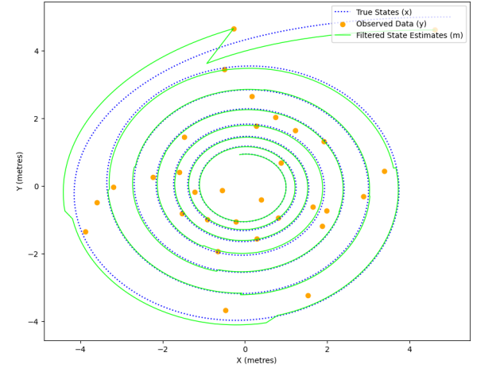
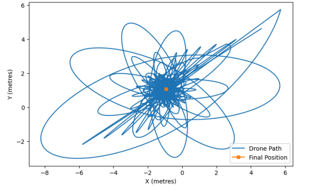

Python Drone
- Simulating Drone Pathway using Python
For one of the assignments in my Advanced Software Engineering Module, I made use of state space models and implicit euler scheme to simulate the pathway of a drone spiralling towards a centre point in Python. Once this was achieved, I then added a Kalman filter to the script to create a prediction (or model) for the drone's path which could be compared with the actual path, over many increments, the filter would become increasingly accurate until the filtered state estimates matched the true state of the drone's path.
The second part of the assignment required a situation where the drone was caught in a whirlwind, in this scenario the drone had a motor attached which could be used to make corrections to the path, the aim was to have settle at the position (-1,1), which was achieved.
